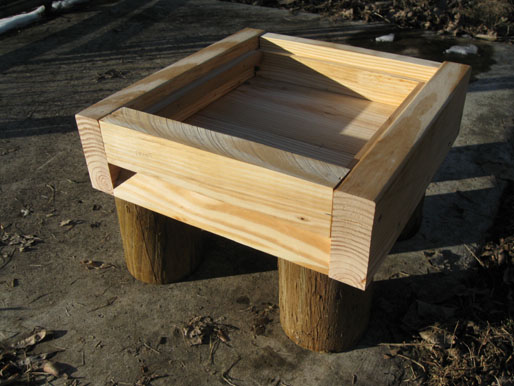
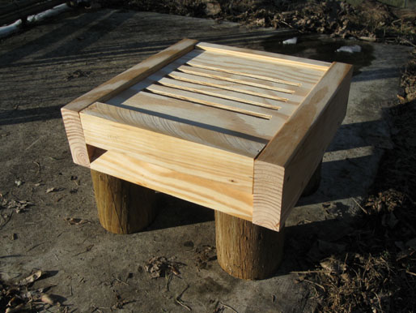
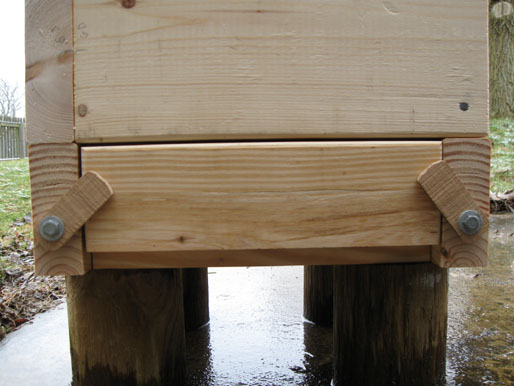
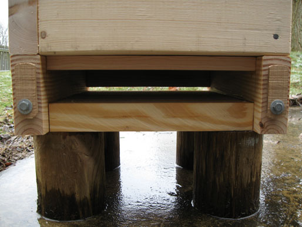

Winter Preparations
Johann Thür offered minor alterations to Johann Christ's tried and tested hive design to meet the demands of retention of nest scent and heat or "Nestduftwärmebindung". These same modifications can also apply to the Warré Vertical Topbar Hive.
"The unframed floor board must contain: an adjustable flight hole with an alighting niche; the space between the floor and the box should comprise six centimetres as an essential comb-free space for bee chains to form, for surplus young bees to keep clear of the comb and for resting foragers. Together they form a flexible heat regulator for the nest. This floor is eventually given an intermediate floor for winter. Towards the back, over the whole width, a cleaning wedge (Putzkeil), through which a non-intrusive observation of the colony and adequate inspection is possible at any time without disturbance, even in winter." - Bienenzucht. Naturgerecht einfach und erfolgsicher, von Johann Thür, Imker (Wien, Gerasdorf, Kapellerfeld, 2 ed., 1946) Translation by David Heaf




